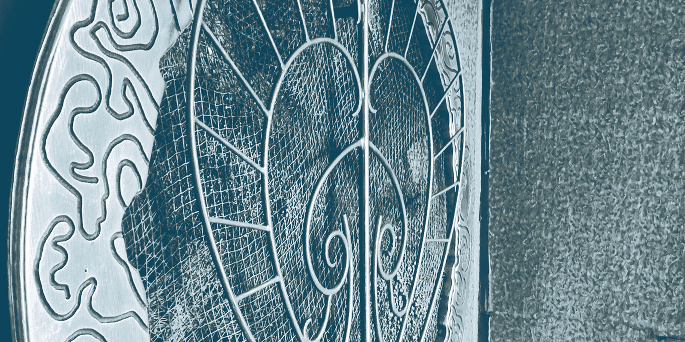
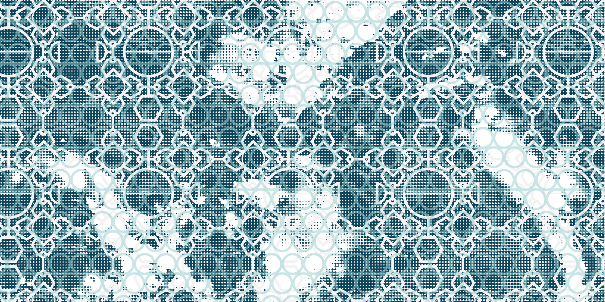

Alexis Tolmatchev développe une pratique à la croisée de la sculpture, de la parure, de l’écriture et du dispositif. Masques, parures, objets, installations et textes composent un ensemble de formes conçues pour être regardées, traversées, parfois activées. Il ne s’agit pas de produire une image de plus, ni d’ajouter un signe au vacarme du monde, mais d’ouvrir un seuil : un lieu où la matière, le corps, le silence et le regard changent de régime.
La matière y tient une place décisive. Métal, textile, dentelle, corde, fibres, fragments, peaux, restes, surfaces opaques ou précieuses ne sont jamais employés comme simples effets de style. Ils portent des traces, des charges, des survivances. Ils retiennent quelque chose du temps, de l’usure, de la mémoire, du passage. Chaque pièce tente de faire tenir cela : non une illustration d’idée, mais une densité. Une forme capable d’absorber des tensions et de les redistribuer.
Le masque occupe dans ce travail une fonction centrale. Il n’est ni costume, ni accessoire, ni théâtre psychologique. Il opère une coupure. Il retire le visage de sa lisibilité immédiate, suspend l’expression comme preuve, refuse la face comme surface de vérité. À partir de là, autre chose devient possible : une présence moins anecdotique, moins individuelle, plus dense, plus archaïque peut-être. Le corps n’est plus sommé de raconter ; il devient porteur, relais, apparition.
Les parures prolongent ce déplacement. Elles n’ornent pas : elles chargent, lient, contraignent, redessinent la posture et la gravité. Elles transforment la silhouette en zone de passage. Le décoratif y est volontairement déplacé vers une fonction plus trouble, plus ancienne, plus active. Porter une forme, ici, ne signifie pas se montrer ; cela signifie entrer sous une loi de matière, accepter une tenue, un poids, une résistance.
Cette pratique est traversée par une attention constante aux régimes de transformation : l’usure, le cycle, la répétition, la survivance, les passages d’un état à un autre, la charge symbolique des matériaux, la persistance de signes anciens. Les œuvres ne cherchent pas à démontrer. Elles cherchent à installer une condition de présence. Un état de veille. Une tension tenue. Une possibilité d’apparition.
Au cœur de cette recherche se trouve le principe d’une imagination activée. L’œuvre n’est pas là pour tout livrer, ni pour se refermer sur une signification unique. Elle appelle une imagination en éveil, capable de relier la matière au symbole, la forme au mythe, le silence à la mémoire, sans réduire trop vite ce qui se donne. Cette imagination activée n’est ni évasion ni commentaire ; elle est une manière d’habiter l’œuvre, d’en accepter l’opacité, d’en suivre les lignes de force, d’y reconnaître ce qui agit sans se laisser immédiatement épuiser par le langage.
L’écriture accompagne ce travail comme un autre lieu de la forme. Elle ne vient pas après les pièces pour les expliquer de l’extérieur. Elle chemine avec elles. Textes d’atelier, fragments, récits, notations, formes brèves ou plus construites constituent une archive active, une chambre d’écho, parfois un contrepoint. L’écriture permet de garder trace, de déplier certaines tensions, d’ouvrir des passages, mais aussi de préserver une part d’inaccompli, de veille, de trouble.

Le travail d’Alexis Tolmatchev se construit dans un dialogue étroit entre fabrication, intuition formelle et élaboration symbolique. Chaque projet naît d’un ensemble de tensions : entre rudesse et précision, protection et exposition, silence et charge, disparition et apparition. Il ne s’agit pas de résoudre ces tensions, mais de leur donner une forme juste. Une forme assez précise pour tenir, assez ouverte pour continuer d’agir.
Les pièces peuvent exister comme sculptures autonomes, comme éléments d’installation ou comme formes activées par une présence, un geste ou un protocole. Certaines relèvent d’une temporalité lente, proche de la veille, de la procession ou de l’épreuve silencieuse. D’autres se présentent comme objets de condensation, dispositifs de mémoire, surfaces de passage entre matière, son, espace et corps. Dans tous les cas, l’enjeu n’est pas la représentation d’un récit, mais l’instauration d’une expérience.
Cette recherche avance ainsi vers des formes qui ne cherchent pas à tout dire. Des formes qui préfèrent tenir leur part d’ombre, d’ambivalence et de silence. Des formes capables d’accueillir ce qui résiste encore au langage, sans pour autant renoncer à la rigueur. À travers ses séries, ses installations et ses textes, Alexis Tolmatchev développe une œuvre où sculpture, parure, écriture et activation se répondent, afin d’ouvrir un espace où la matière se charge, où l’imagination s’active, et où le regard peut, à son tour, franchir un seuil.